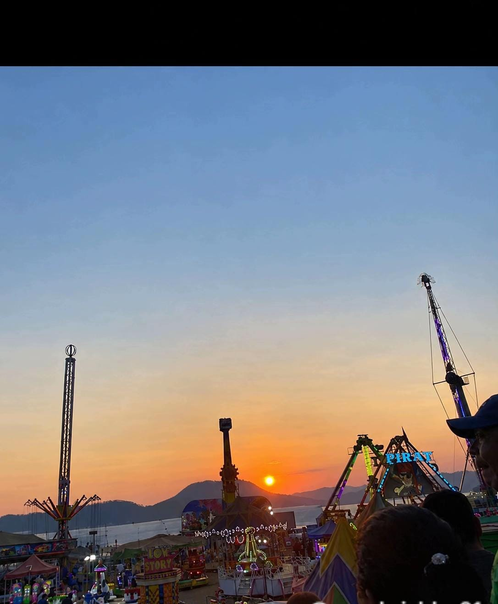
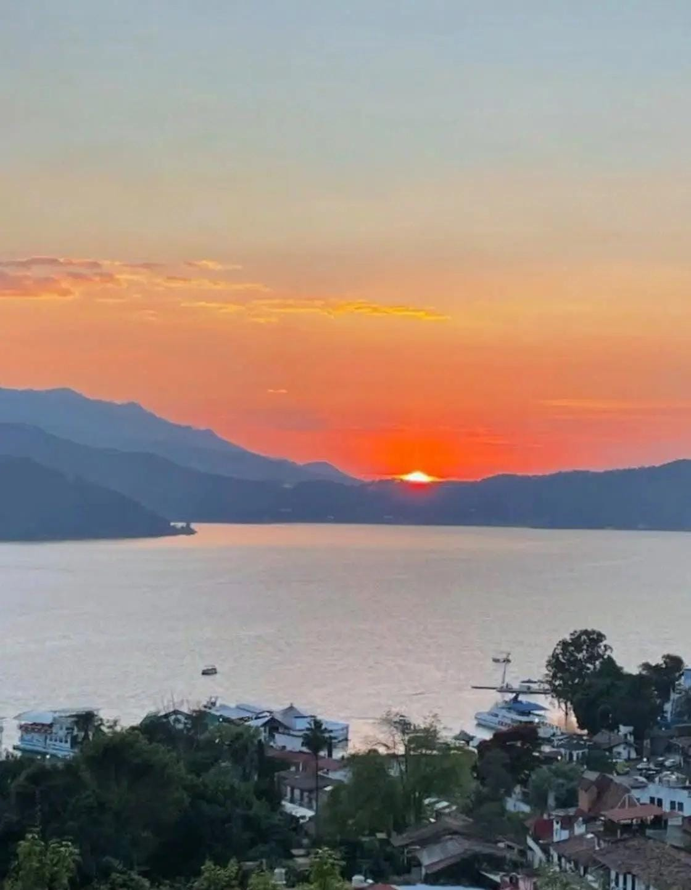
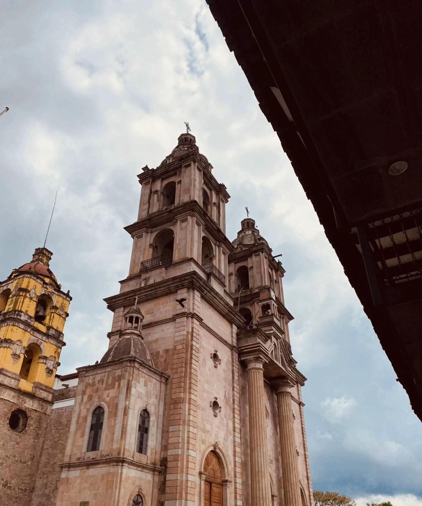
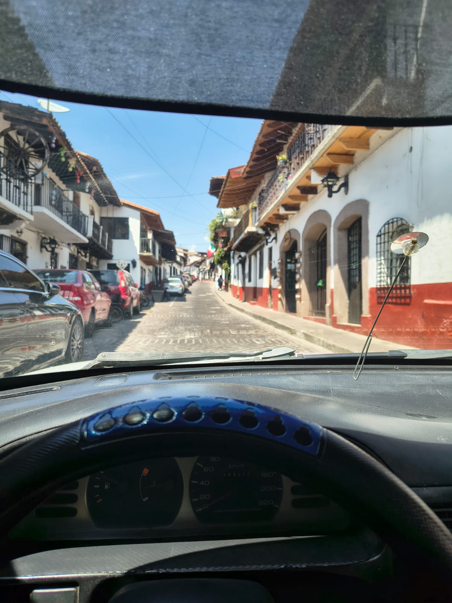
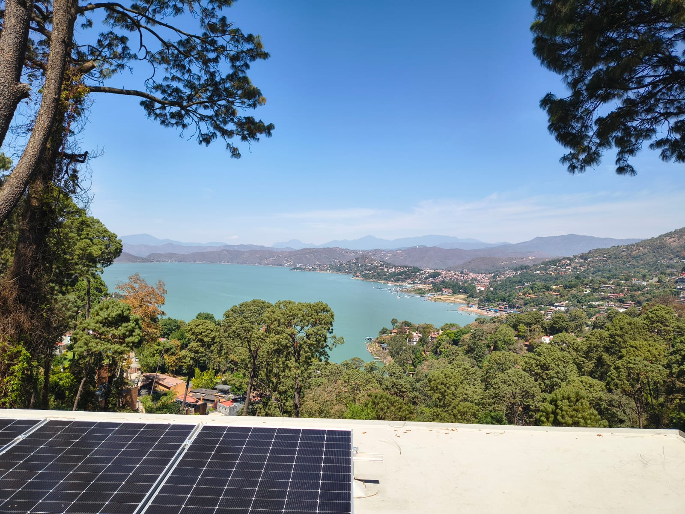

LOS GO KARS
"El Kartódromo Valle de Bravo es la principal pista al aire libre para manejar go-karts en la zona, ubicada en el kilómetro 27.5 de la carretera Toluca-Valle de Bravo (vía Los Saucos)."

FERIA DEL 3 DE MAYO
"La Feria del 3 de mayo, conocida tradicionalmente como la Feria de Santa María o festividad de la Santa Cruz, se ubica principalmente en el barrio de Santa María Ahuacatlán, en las inmediaciones del Templo de Santa María Ahuacatlán (también llamado Templo del Cristo Negro), en Valle de Bravo, Estado de México."

MIRADOR LA PEÑA
"El Mirador La Peña se localiza sobre el Camino a La Peña 114, en la localidad de La Peña, dentro del Pueblo Mágico de Valle de Bravo, Estado de México (C.P. 51200).. "

IGLESIA DE SAN FRANCISCO
"La Parroquia de San Francisco de Asís se encuentra ubicada en la Plaza Independencia número 1, en la colonia Centro, C.P. 51200, Valle de Bravo, Estado de México, justo en el corazón del pueblo mágico frente a la plaza principal."

CENTRO VALLE
La calle de la foto es una de las calles empedradas típicas del centro - parece ser la Calle Independencia / 5 de Febrero, a 2 cuadras del jardín central. Todas las calles del centro son así: empedradas, casas blancas con guarda polvo rojo, balcones de madera y teja de barro. Es el estilo que le llaman "arquitectura vallesana".

LAGO DESDE AVANDARO
Lago de Valle de Bravo, visto desde Avándaro.Te doy la info:¿Qué es lo que se ve en la foto? Es el Lago Avándaro, que en realidad es la Presa Valle de Bravo. Es un lago artificial creado en 1947. Desde Avándaro se ve la vista más abierta de todo el lago. Lo que se ve a la derecha de tu foto es el embarcadero y el pueblo de Valle de Bravo al fondo, y a la izquierda el cerro de Monte Alto.